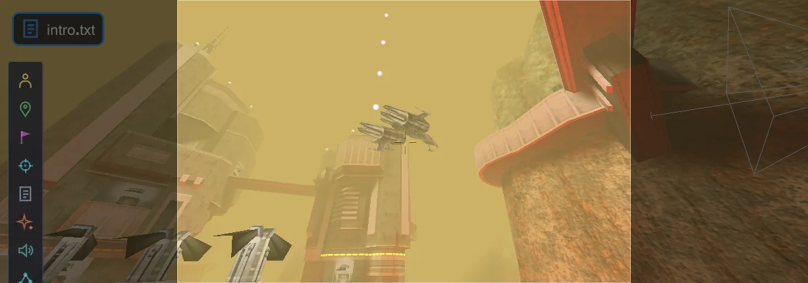
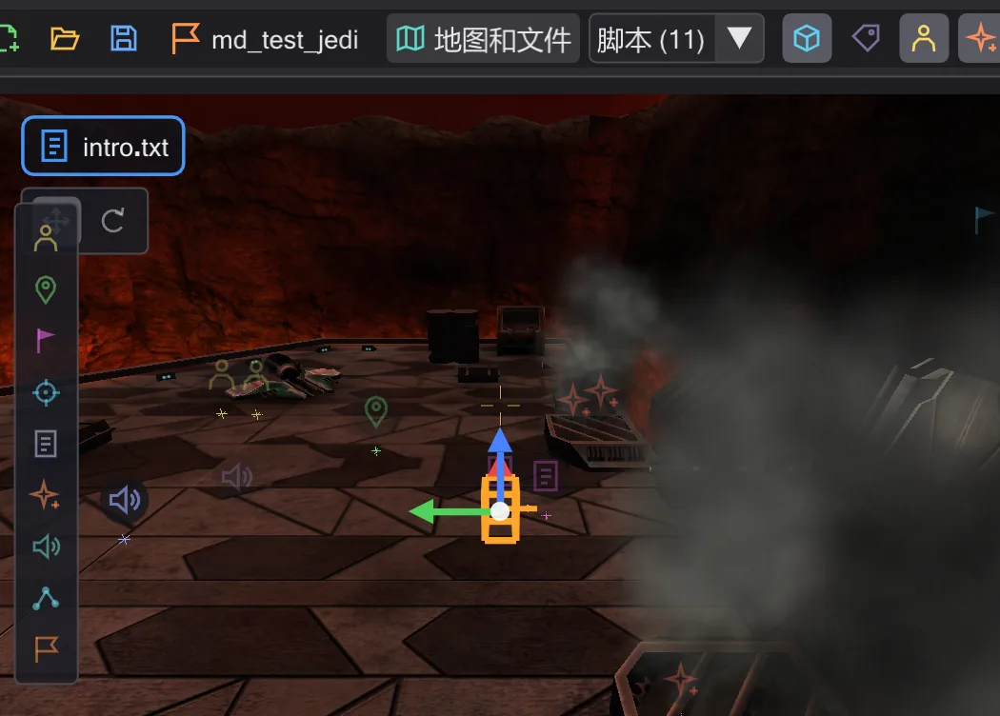

教程
教程
每个教程都从第一次点击开始,一直带你完成一项工作,每一步都有配图。按想做的内容选择一个。

第一个过场动画
两个摄像机镜头,中间一段平滑移动,透过摄像机观看,并为游戏编译。

让角色行走
放置一个角色和一个行走目标,让脚本把角色送过去,然后在地图上修改路径——步行或奔跑、中途增加路径点。

飞船沿 ROFF 路径飞行
为竞技场上空的飞船制作一段带转弯的自由飞行——生成 ROFF 文件,用操纵器旋转,并为游戏保存。

你自己的任务
从一张空地图到游戏可加载的任务:创建任务、添加开场、检查并打包成 .pk3。
教程使用 Movie Duels(MD_Missions_Ep3.pk3 中的 md_am_sith),以便图片与你看到的一致;其他任务的操作方法相同。如果你还不熟悉窗口各部分,请先阅读 窗口 和 视角操作。